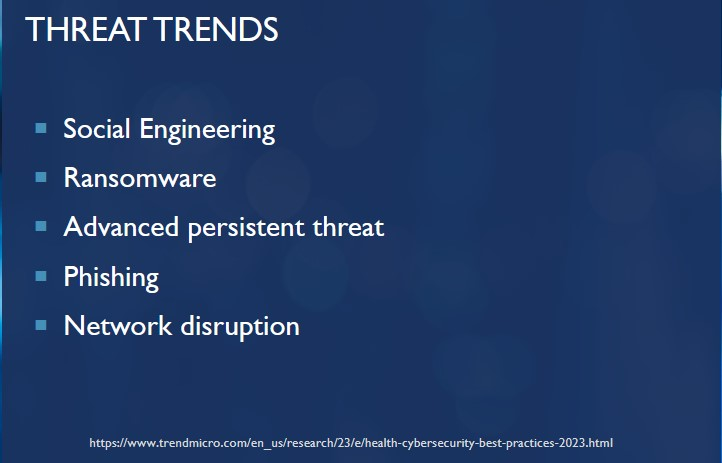

Critical Assets
Patient
• Mission critical information regarding patient health. Protected by law. Breach would be damaging to institutional reputation, patient well-being, second order effects (identity theft, ransom, etc). Health-related information is some of the most valuable available.
• These are devices that monitor and/or sustain life. Disruption of these devices functioning can lead to death. Any resulting service disruption leads to loss of reputation and thus has direct business impact. Service disruption is unpredictably synonymous with patient care in the healthcare context.
• Any breach of diagnostic devices could alter test results and pervert treatment. An attack such as this could have wide-ranging effects if not caught early by misdiagnosing many people.

Institutions & Network
• Attacks upon the infrastructure and network of a healthcare facility include but are not limited to:
- Service disruptions
- Environmental control
- Network lockdown/data lockdown
- Inoperable medical devices
- Communication Systems
- Ambulances and Emergency Vehicles
- Proper information security practices are a challenge with legacy systems having to be brought along into the future for which they may be unprepared
• Protecting the facility itself from cyberattack goes without saying; it is the hub to which almost everything is connected in some manner and the space in which we operate. Disrupting the functioning of a hospital is to endanger patients.
Staff
• Frequently subject of attack
• Primary tool against attack
• Must be educated and empowered
• Doctors, Nurses, and Specialists: These skilled professionals provide essential care and expertise.
• Administrative Staff: They manage appointments, records, and logistics.
• Security Personnel: Responsible for physical safety within healthcare facilities.
• IT Personnel: Mission critical to all of IT.